Welcome to Sisterlocks Uganda!
Here, we celebrate the beauty and versatility of Sisterlocks
a unique hairstyle designed for natural hair.
Our mission is to empower individuals by providing
expert services and guidance on maintaining healthy, beautiful locs.
At Sisterlocks Uganda, we believe that hair is more than just a style;
it's a form of self-expression. Our trained specialists are dedicated to ensuring
that each client receives personalized attention tailored to their specific hair type and lifestyle.
We offer a range of services, from initial installations to regular maintenance, helping you achieve and maintain the look you desire.
We are passionate about embracing natural beauty and fostering a supportive community where everyone feels valued and understood.
Our workshops and events create opportunities for education and connection, allowing individuals to learn more about hair care, styling techniques, and the cultural significance of Sisterlocks.
Discover our story, values, and the transformative journey of Sisterlocks as
we help you express your unique style with confidence and pride.
Whether you’re new to Sisterlocks or looking to enhance your existing locs, we are here to guide you every step of the way.
Join us in celebrating the artistry of natural hair, and become a part of our Sisterlocks family today!
 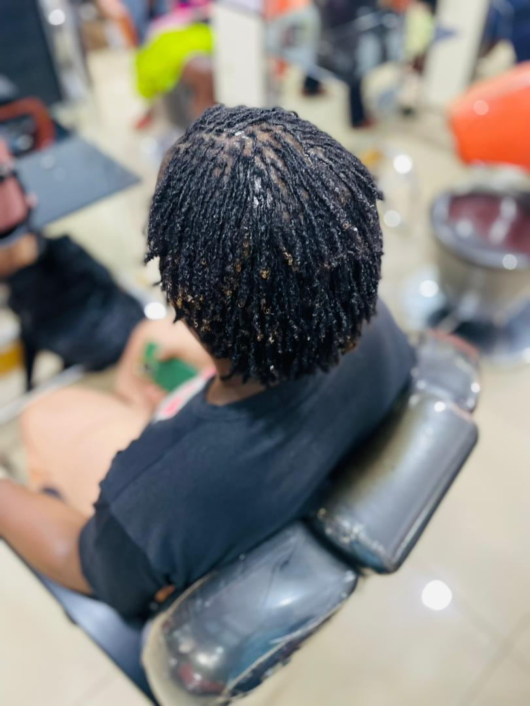
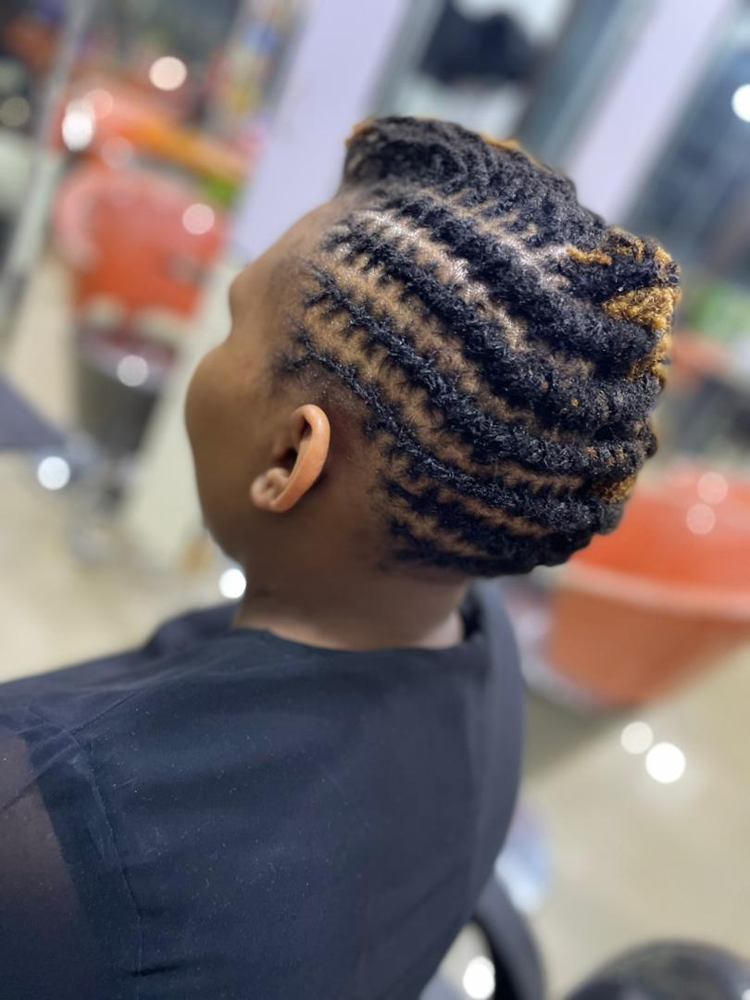
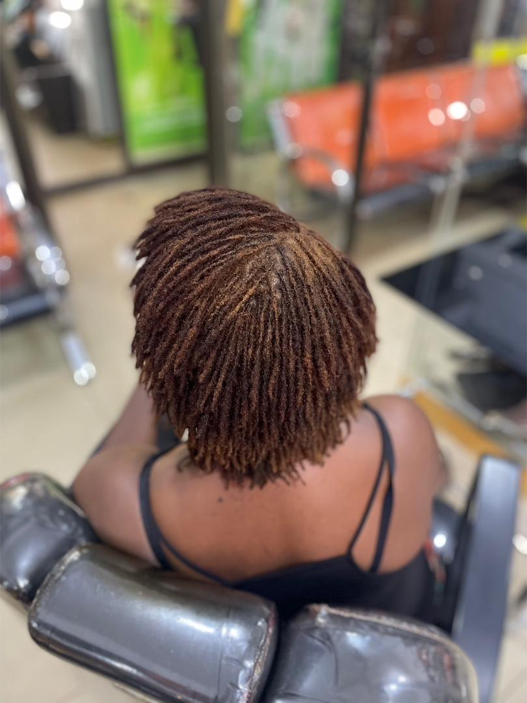
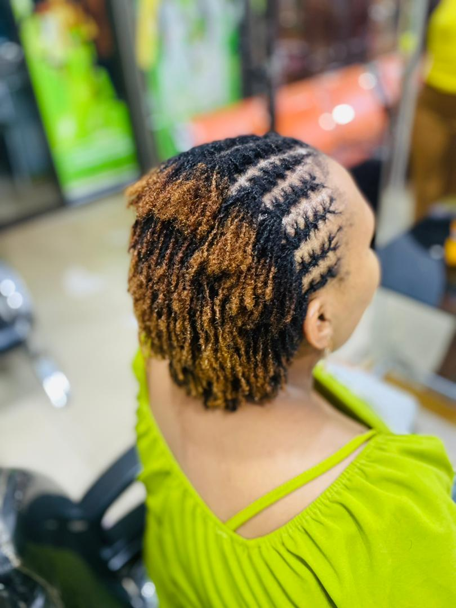
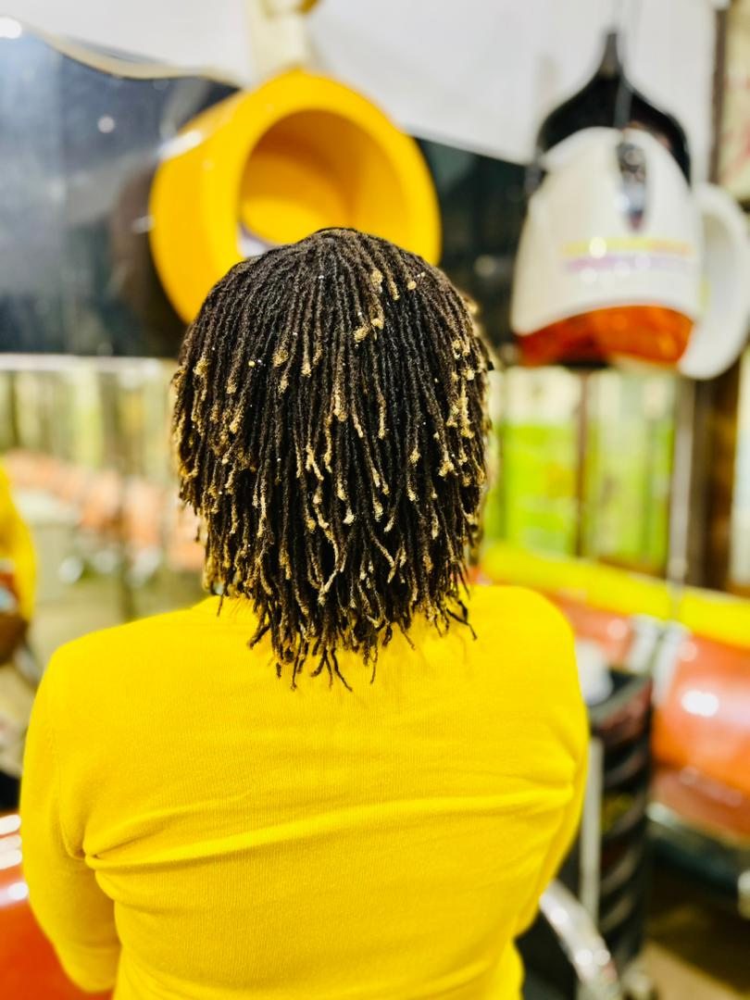
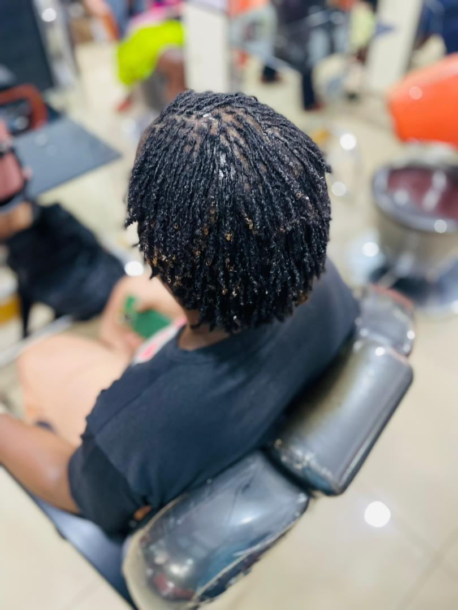
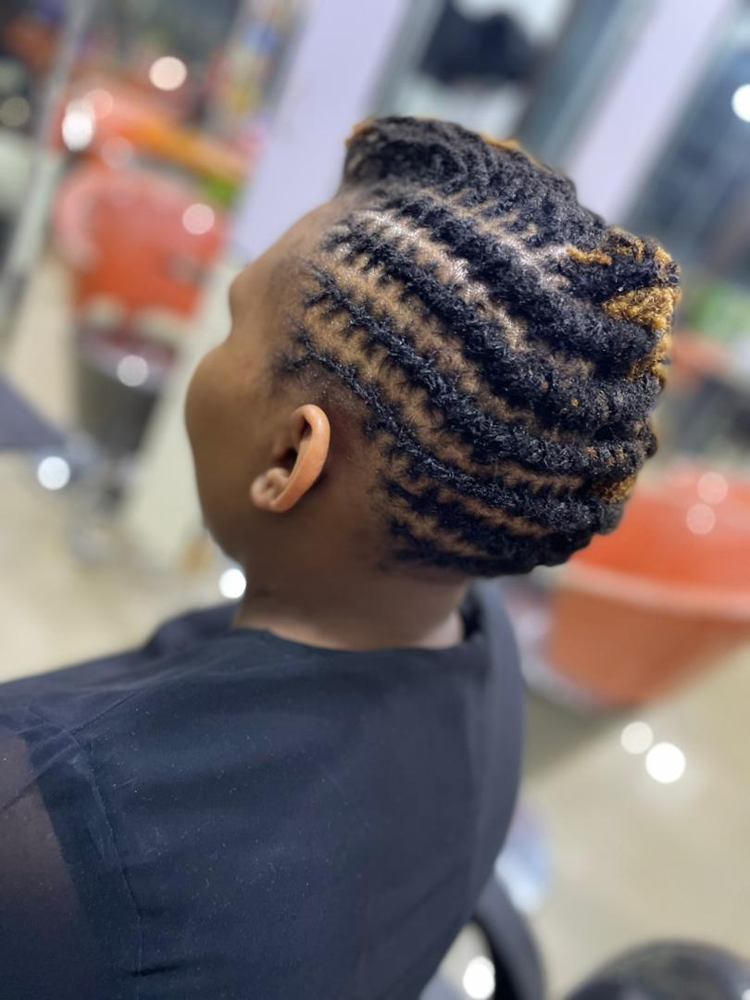
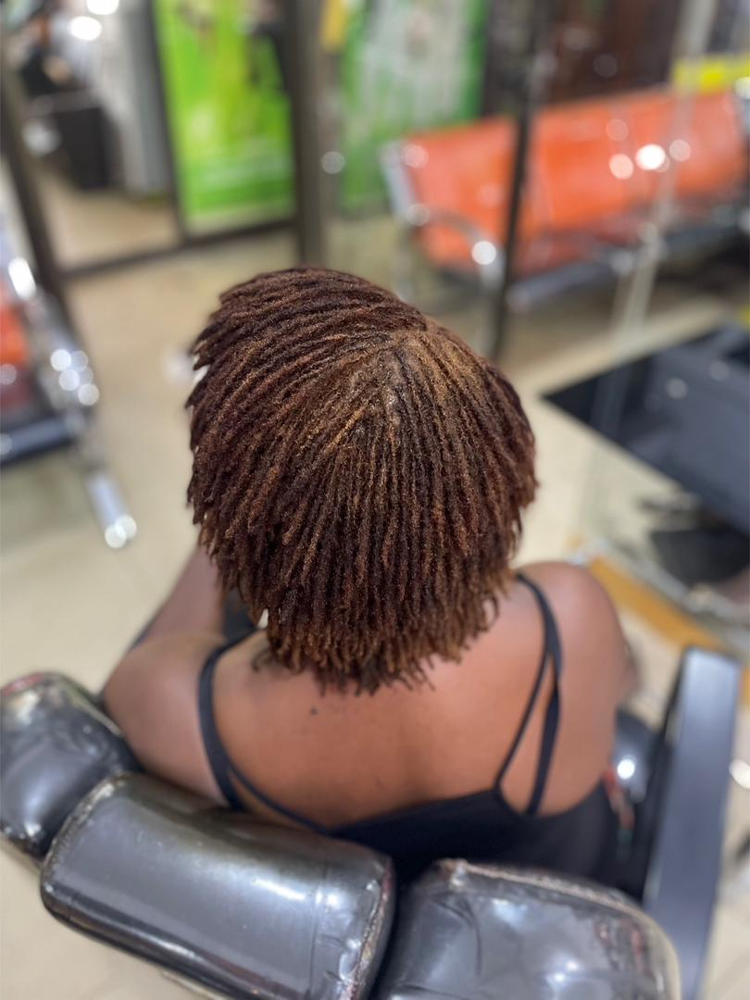
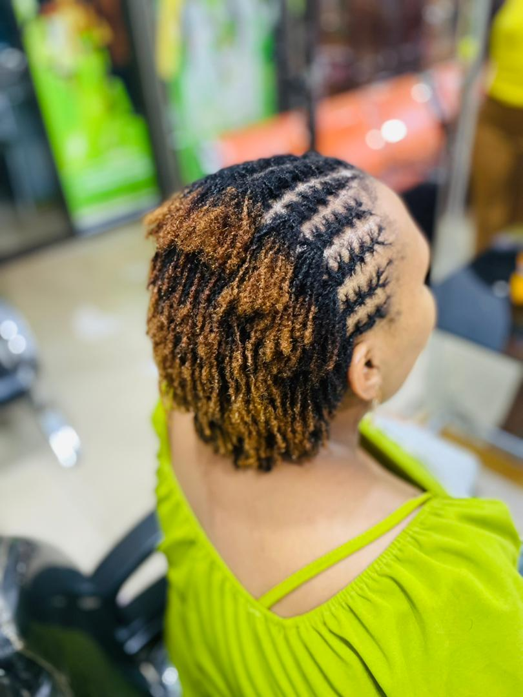
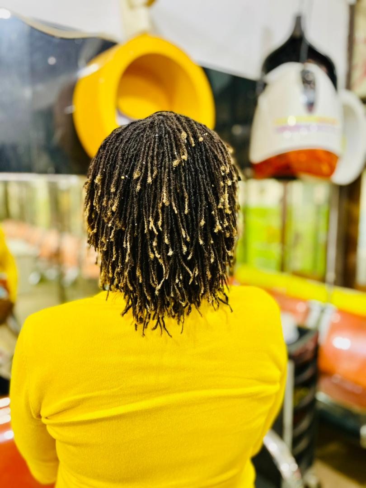
 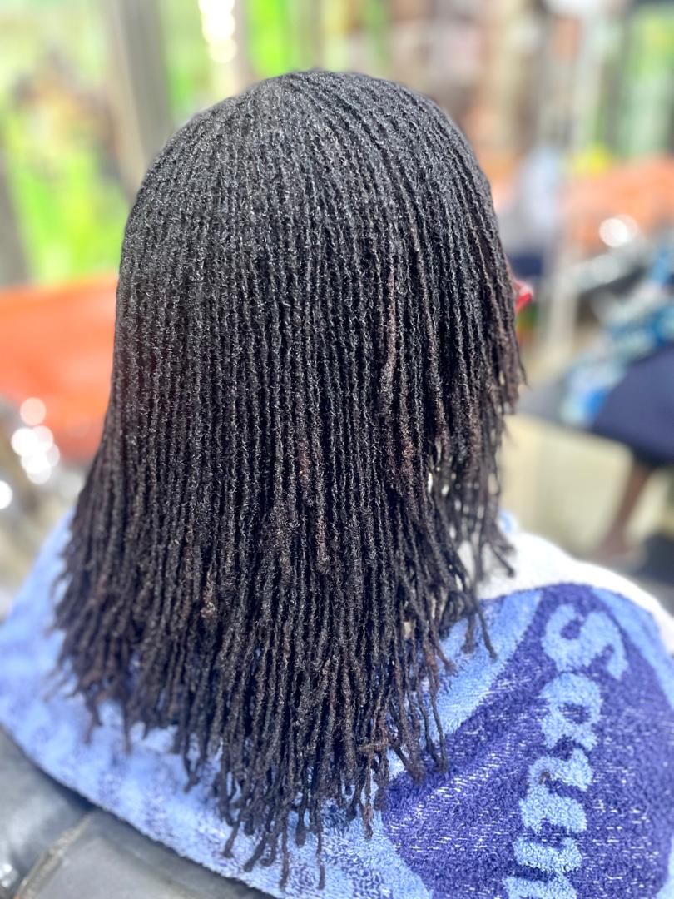
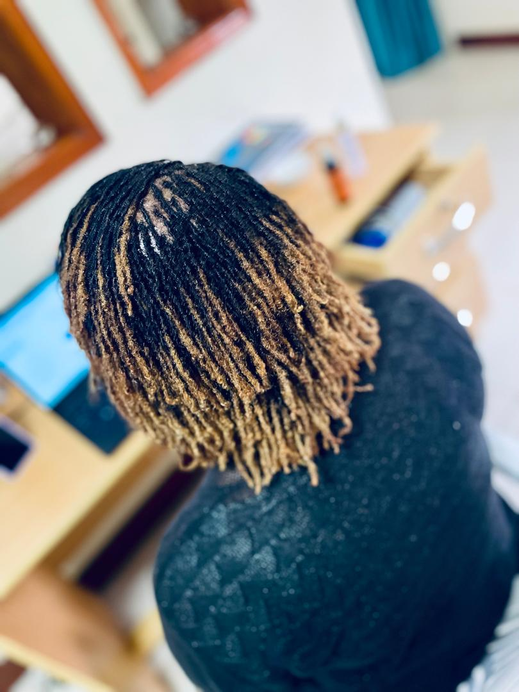
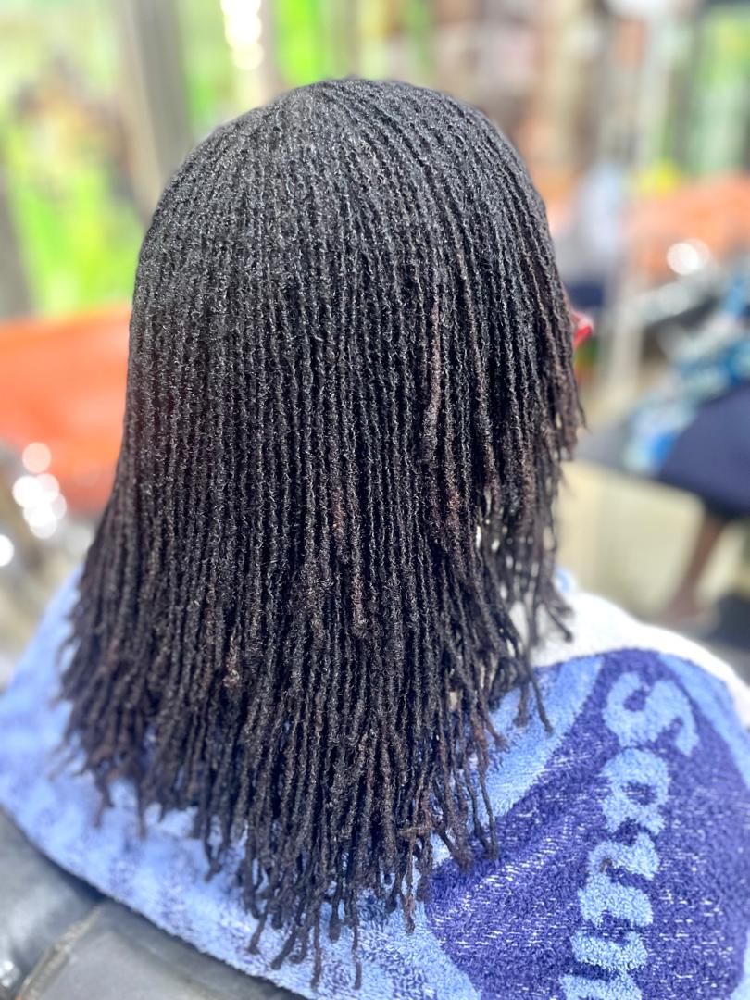
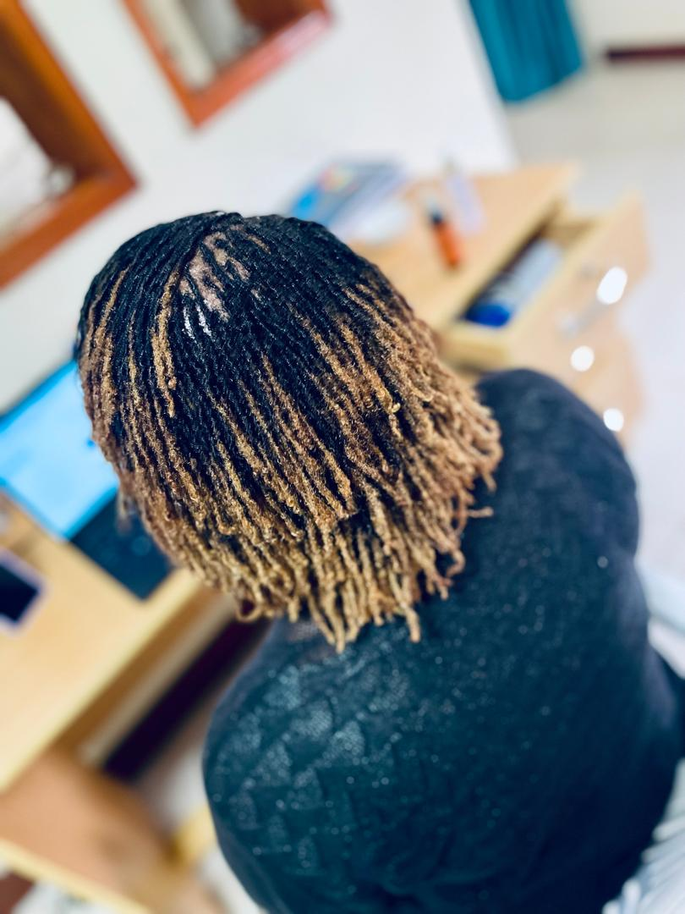